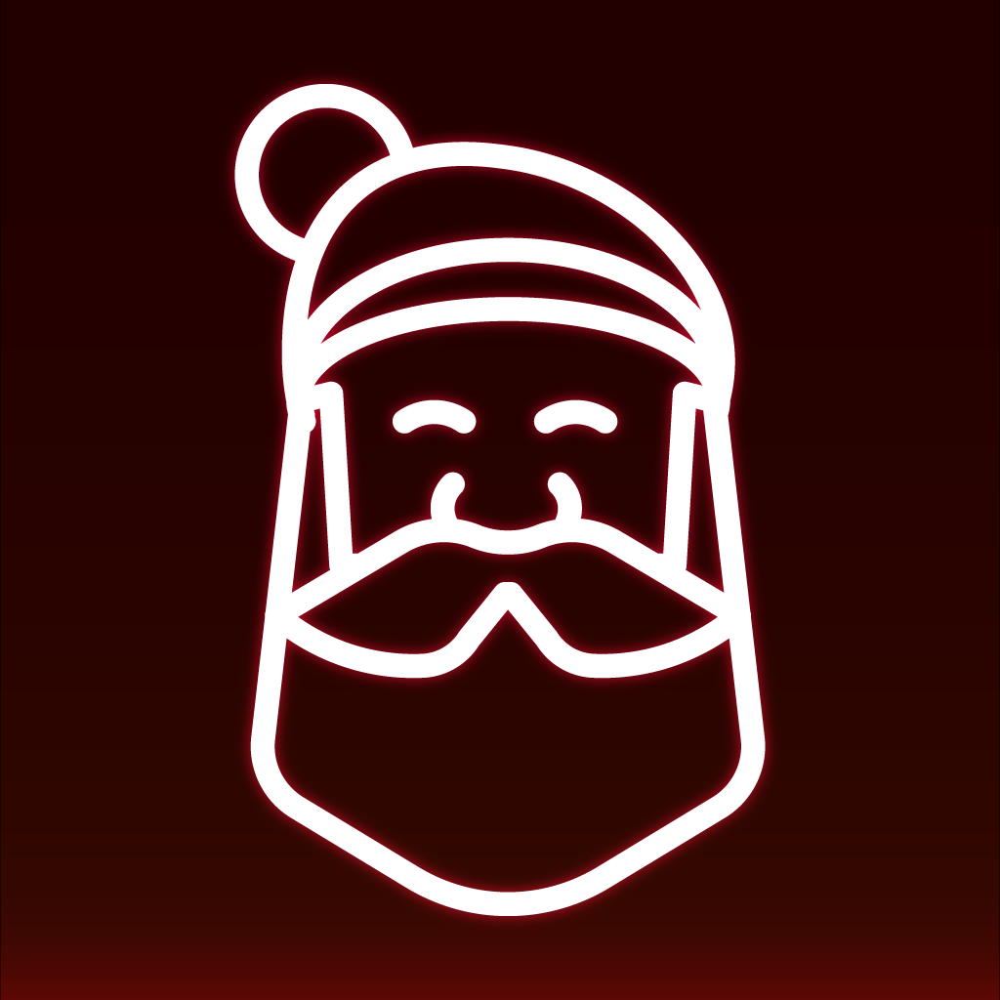
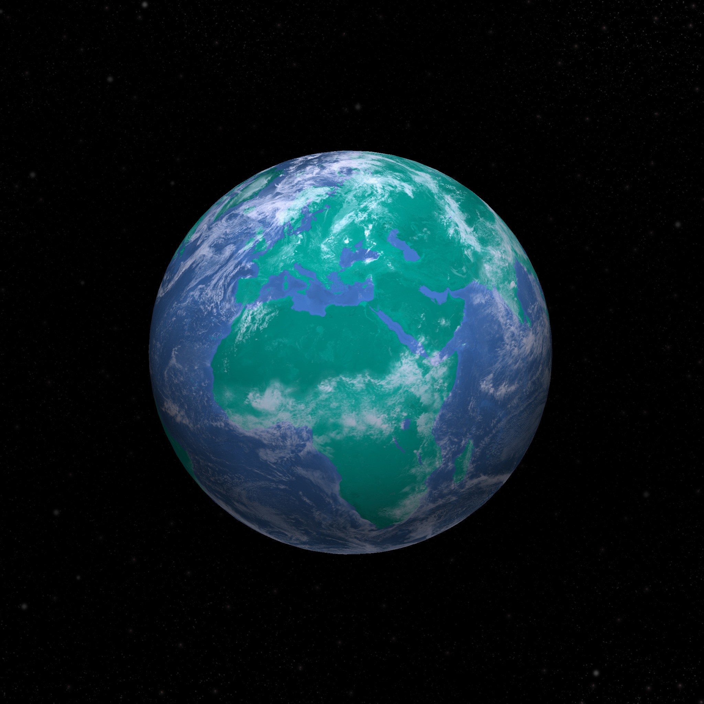

Hi, I'm Nate. I'm a self-taught graphic artist and web developer. I got my start doing small designs and projects in high school for neigbors and local sports teams. I have since gone on to develop complex web tools for clients around the world.
Currenly I'm working on personal projects and occationally taking clients. If you are interested in working with me please shoot me an email!
-
Radian Rule
A simple app that can aid in determining the required angle between two objects when the desired lateral separation and current distance between the two objects is know. This is useful in maritime operations such as stationing.

-

Santa Bingo
Santa Bingo was a traditional holiday game my family would get together and play. In 2020 when our family was spread accross the country and travel was difficult due to the pandemic, I decided to take the game online. Santa Bingo functions like a traditional bingo game, but features family fun christmas icons and imagry instead of numbers. The game can be played with any number of people and its web-based app allows any desktop or mobile device to join. Email me for a working demonsration or visit the main site.
Santa Bingo -

Maps
These are a few custom maps made for Middlebury Interactive Languages. They were used in online French and Spanish high school courses.
Maps